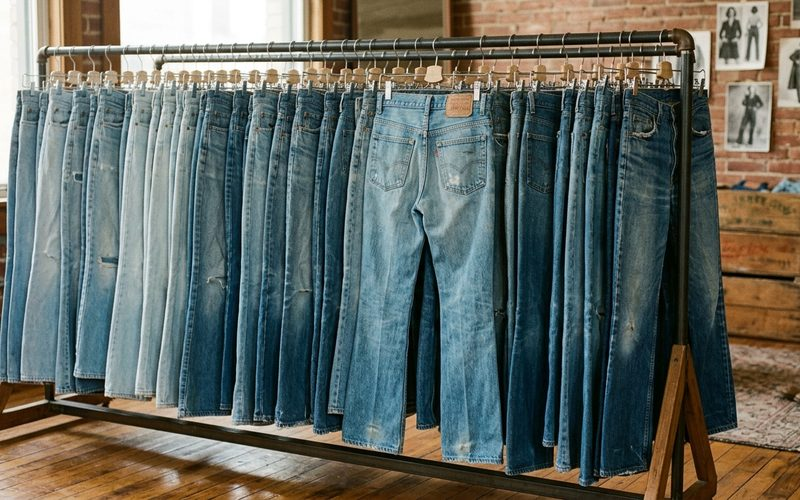

O jeans vintage nunca realmente foi embora. Mas nos últimos anos, ele voltou ao centro do estilo com uma intensidade particular, e com uma diferença importante em relação às suas versões anteriores de ressurgimento: desta vez, ele está sendo procurado em sua forma mais autêntica, nos brechós e bazares, não nas versões "efeito vintage" das lojas de fast fashion. A diferença entre um jeans genuinamente vintage e um com lavagem artificial é visível para o olho treinado, e palpável para qualquer pessoa que experimente os dois.
O denim legítimo de décadas passadas tem um peso, uma trama e uma coloração que as reproduções atuais não alcançam. A construção era diferente: mais tecido por peça, costuras mais robustas, rebites de metal que aguentam décadas de uso. Essas características fazem do jeans vintage uma das peças mais recompensadoras do garimpo.
Jeans vintage genuíno tem algumas características identificáveis. A cintura tende a ser mais alta do que os cortes contemporâneos, e isso é uma das razões do seu retorno, já que a cintura alta valoriza a silhueta feminina de forma universalmente favorável. O corte é reto ou levemente bootcut, sem os afunilamentos extremos dos anos skinny. A cor é mais sólida e saturada do que o denim contemporâneo, resultado de um processo de tingimento diferente. E o peso da calça na mão é maior: o denim antigo era produzido com mais fio por centímetro quadrado.
A calça jeans de cintura alta, que é a versão mais encontrada nos brechós, funciona excepcionalmente bem com blusas tucadas por dentro (tucked-in), criando a proporção que valoriza a cintura e alonga as pernas. Com camisa branca aberta sobre um body branco, tênis branco e bolsa tote: o look mais limpo e eficiente do dia a dia. Com blusa de seda e scarpin: a transição elegante do casual para o semi-formal. Com blazer e coturno: a fórmula do estilo contemporâneo com atitude.
O desgaste natural do jeans vintage é uma virtude, não um defeito. Branqueamentos suaves, marcas de uso nas coxas, o desbotamento gradual, tudo isso é a história da peça tornada visível. Esse tipo de "imperfeição" é, na verdade, o que os entusiastas de denim chamam de "fades", e que as versões artificiais passam décadas tentando imitar sem sucesso.
Garimpar um bom jeans vintage exige paciência, e é por isso que a recompensa é tão grande quando ele aparece. No Brechó Outra Vez, quando uma calça jeans de qualidade chega ao acervo, ela raramente fica por muito tempo. Porque quem sabe o que está procurando, reconhece imediatamente. E porque, com o jeans vintage, como em tantas outras coisas da moda, o original é sempre o melhor.